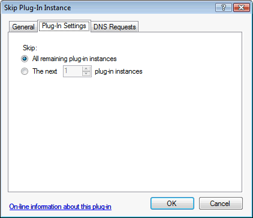

This plug-in is used to skip other plug-in instances when processing DNS requests.
This is typically used to apply one or more conditions (in the "DNS Requests" tab) to several other plug-ins at the same time.
This plug-in is different than other plug-ins in that it does not fetch or provide any DNS records directly.
Instead it instructs Simple DNS Plus to skip some or all of the following plug-in instances (listed in the Simple DNS Plus Options dialog / Plug-Ins section) - when the conditions in the "DNS Requests" tab are met.
In the plug-in instance dialog / Plug-In Settings tab you can specify how many of the following plug-in instances to skip:

After creating and configuring the plug-in instance, use the "Up" and "Down" buttons in the Options dialog / Plug-ins section to position it immediately above the plug-in instance(s) that should be skipped:
NOTE: This plug-in is new in Simple DNS Plus v. 5.2 and replaces the "Domain Whitelist" and "Scheduler" plug-ins from v. 5.1. Whitelisted domain names / dates/times can now be specified in the "DNS Requests" tab.